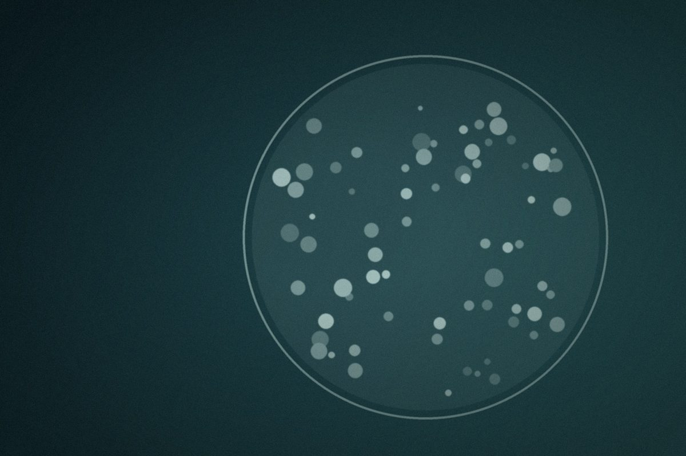

The lab
VCastroLab studies bacteria that cause foodborne illness, such as Shiga toxin-producing E. coli and Salmonella, combining genome sequencing with laboratory microbiology. We are now also opening a new front in applied physical chemistry, with electrochemistry and bioinformatics.
Research
Research lines

STEC virulence and genomics
What genomes reveal about STEC.
Pathogen control and sanitizer resistance
Sanitizers, organic acids, UV-C and heat.

Pathogens in the Brazilian food chain
Occurrence and resistance in Mato Grosso.

Applied physical chemistry, electrochemistry and bioinformatics New
Sensors to detect food spoilage.
Featured publications
The trade-off between sanitizer resistance and virulence genes: genomic insights into E. coli adaptation
Inconsistent PCR detection of Shiga toxin-producing Escherichia coli: insights from whole genome sequence analyses
Shiga-toxin producing Escherichia coli in Brazil: a systematic review
News
- Joined UFMT as a professor and started a new research line in applied physical chemistry, with sensors to detect food spoilage.
- Completed a postdoc at the University of Lethbridge, Canada, funded by the BCRC.
- Paper on sanitizer resistance and virulence genes in E. coli published in Antibiotics.
- Genomes of Brazilian Salmonella Cerro and Schwarzengrund published in Genes.